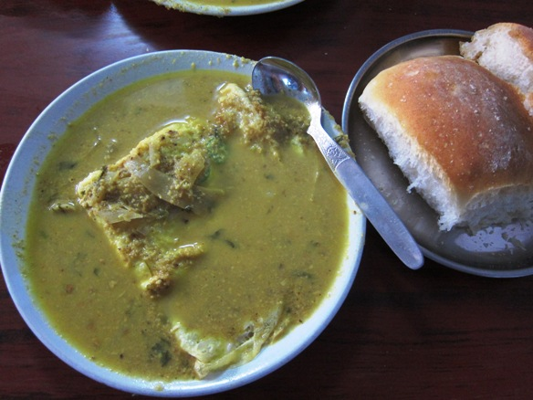

ROS OMELETTE 🥚🍛

Description
Ros Omelette is a popular Goan street food where a fluffy masala omelette is served with a spicy, flavorful
chicken gravy (“ros”). It's eaten with bread rolls (pav) and is a favorite late-night snack in Goa.
The combination of soft omelette, rich curry, and buttery bread makes it a true comfort food.
Ingridents
Omelette
- 4 eggs
- 1 onion, chopped
- 2 green chilies, chopped
- 2 tbsp coriander leaves
- 1/4 tsp turmeric
- Salt, to taste
- 2 tbsp oil/butter
Gravy
- 250 g chicken, small pieces
- 2 onions, sliced
- 2 tomatoes, chopped
- 2 tbsp Goan curry/Xacuti masala
- 1 tsp ginger-garlic paste
- 1 cup coconut milk
- 1+1/2 cup water
- Salt, to taste
- 1 tbsp oil
STEPS
- Gravy:Sauté onions in oil until golden. Add ginger-garlic paste, tomatoes, and masala; cook
2 mins. Add chicken, salt, and brown slightly. Pour water (and coconut milk if using), simmer 15–20 mins.
- Omelette:Beat eggs with onion, chilies, coriander, turmeric, and salt. Cook in oil until
set, flipping once.
- Assemble:Place omelette on plate, pour hot gravy over, garnish with coriander. Serve with
pav and lime.

HOME